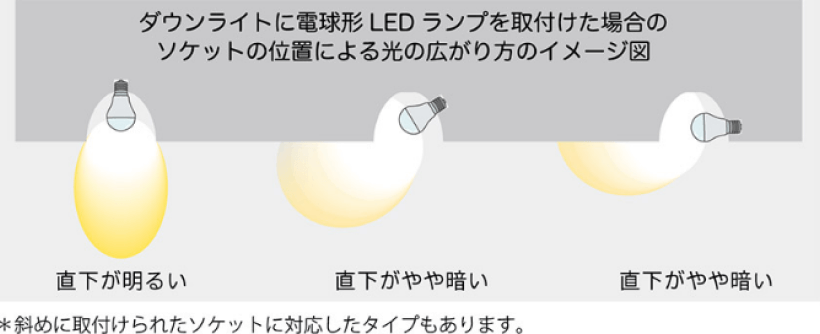

ジモデン登録の
電気工事店なら
ダウンライト交換
8,800円(税込)
2台目以降4,400円

LEDダウンライト器具代
Point! プロが解説
ダウンライト交換で知っておきたい 交換費用相場と 適正業者の探し方

ダウンライト交換でお困りですか？
-
蛍光灯からLEDに変えたい
けどどうすればいい？ -
工事費はいくらくらい
-
ダウンライトとは？


ダウンライト交換費用と業者選びのポイント
Index
01 電気工事業者に依頼した際のLEDダウンライト交換費用はどれくらい？
LEDダウンライト交換工事を業者へ頼む際の工事費用は、
交換工事、LEDダウンライト器具代、追加費用（コインパーキング代・足場設置又は3m以上の高所作業・取り外し機器処分費）など、大きく３項目からなります。交換工事の明細として、出張費・取外し費・取付費など細かな明細のある業者もあります。
ダウンライト交換費用の適正価格
- 住宅で使用されている一般的なもので、同サイズへの交換の場合
- 電気工事業者へ直接依頼する場合の価格
- 天井高３m以内の作業
- 取り外し器具の処分は別途
- 令和６年４月１日時点
交換工事費 1台あたり
8,800円~12,100円
(税込)
( 基本料、出張費などの項目を含めた交換費用の総額。
同時施工の場合２台目以降は半額以下が一般的 )
LEDダウンライト器具代
( 一体型は1,500円～5,000円程 | ランプ交換可能型は5,000円〜8,000円程 )
駐車場代・処分費などの追加費用
( コインパーキング代 | ダウンライト処分費 1,100円/台 | 片道20km以上など遠方の場合は交通費 | 階段途中や吹き抜けなど、足場設置が必要な場合は別途見積り )
ポイント！
-
LED一体型ダウンライトへ交換
1台あたり 10,000円程 -
LEDランプ交換可能型ダウンライトへ交換
1台あたり 15,000円程 - 工務店、管理会社へ頼むと２～３割高額になる
LEDダウンライト器具代はいくらくらい？
LEDダウンライトの種類はかなり多く、光色切替、人感センサー付き、調光機能付きなどの高機能タイプもありますが、ここでは光色が一色（電球色・温白色・昼白色）で、大きく分けて２タイプに分類される『LEDランプ交換可能型』と、『LED一体型』の値段を紹介します。価格はパナソニック製。
-
LEDランプ交換可能型 電球のようにLEDランプを取替えできるダウンライト。
電気工事士の資格不要でLEDランプ交換可。- 一体型より値段は高い
- 器具の推奨交換時期は10年
価格 : 5,000円~8,000円程
-
LED一体型 LEDランプが器具本体と一体化しているため、故障時は器具ごと交換が必要となります。
- 値段が安い
- 器具の推奨交換時期は10年
価格 : 1,500円~5,000円程
02 ダウンライト交換業者へ見積りを取ろう
見積りを行うには通常は現地確認が必要
では実際にダウンライトを交換をしたい場合、どこに頼めば良いのでしょうか。
ダウンライト交換の依頼先は主に電気工事業者、街の電気店、ハウスメーカー、ホームセンターとなります。
まずは見積りを取ることになりますが、ダウンライト交換工事では器具仕様、設置状況確認のため、基本は現地調査が必要となりますが、電気工事のプロなら写真１枚でもかなり正確な費用を算出することができますので、オンラインで問い合わせてみましょう。
※見積りのみで費用が発生する業者もありますので、問い合わせ時に確認しましょう。
既設ダウンライト型番と設置状況のヒアリングでオンライン見積り可
現在設置されているダウンライトの型番と台数、設置状況（脚立を安全に設置して作業できるかが重要）を確認できましたら、業者によりオンライン見積りが可能です。ただし、工事を発注をする前に必ず現地を確認してもらいましょう。
※下記に該当する場合はオンライン見積もりができません。
- 天井高3m以上の高所作業
- 階段途中など、脚立を安全に設置できない場合
- 調光スイッチを使用している
オンライン見積り必要事項
-
1 既設ダウンライト型番と台数

- 図面にて型番を確認、又はダウンライトを天井から取り外して銘板の写真を撮影
- ダウンライトを天井から取り外すことは難しいため、枠の外径でも見積りは可能ですが、間違っている可能性があるため、発注前に必ず現地を見てもらいましょう
- 交換するダウンライトの台数
-
2 希望するダウンライトの仕様
-
LEDランプ交換可能型 -
LED一体型
-
LEDランプ交換可能型 or
LED一体型 -
LEDランプ色
(電球色・温白色・昼白色)
-
ダウンライト交換工事見積りの要点
天井高さ3m以上、階段の途中、吹き抜けなどの
特殊な環境ではなく店舗で使用する大型のダウンライトでなければ、
ダウンライト交換工事の費用は、
1台
8,800円~12,100円
(税込)
LEDダウンライト器具代
(一体型は1,500円～5,000円程 | ランプ交換可能型は5,000円〜8,000円程)
-
処分費は別途。
業者に依頼した場合は１個あたり1,100円程ですが、自治体でゴミ処分できることが多い。 - 出張費、取外し費、取付費などの項目がある業者もありますが、総額で上記費用に納まる業者を探しましょう。
- 複数台でしたら交換費用はかなり割安になるのが一般的。
- LEDダウンライトを施主支給で行うと、点灯しなくなった時に施工不良ではなく器具不良だった場合に費用が発生することがあります。
03 ダウンライトをLEDへ交換する際に電気工事士の資格がなくてもできること、できないこと
1 電気工事士の資格不要でできることはLED電球への交換のみ
-
- ダウンライトにE17又はE26口金の白熱電球、ミニクリプトン電球、電球型蛍光灯が設置されている場合は、電気工事士の資格不要でLED電球へ取替えができます
- LED電球は、E17口金なら2,000円程、E26は1,000円程で購入できます
-
 画像出典 : 一般社団法人日本照明工業会
https://www.jlma.or.jp/led-navi/contents/cont21_LEDlamp.htm- LED電球は、従来の電球よりも配光角が狭く、電球が斜め、又は横向きに設置されている場合は広配光タイプのLED電球を選定しましょう
- ダウンライト器具本体はそのまま使用するため、耐用年数が最長15年とされている期間を超える場合はLED器具への交換を検討しましょう
-
プロが解説
E17口金のミニクリプトン電球をLED電球へ交換する際は大きさに注意。ミニクリプトン電球の大きさは35mm×67mm。これと同じ大きさのLED電球を選ばないと、特に斜め又は横向きに設置されている場合、LED電球が大きくて取付けできないことがあります。
2
コンパクト蛍光灯のダウンライト、LED一体型ダウンライトなど、
器具ごと交換する場合は電気工事士の資格が必要
- LED一体型ダウンライトの照度低下や故障が約10年の使用で増えてきております。こちらも器具ごと交換が必要となり、電気工事士の資格が必要です。
プロが解説
04 ダウンライト交換工事業者の特徴
電気工事業者
Expert
大規模施設や住宅などの電気工事を行う事業者。精度に加えスピードを求められる仕事をこなしているので本物のプロと言えますし、迅速に動いてもらえるでしょう。
電気工事業者は家電量販店やホームセンターと違い、現在使用している品番と設置状況の情報があればLINEやメールで見積りを出してくれるでしょう。
- 相場
-
１台8,800円～11,000円＋ダウンライト器具代
2台目以降4,400円～5,500円＋器具代 - 依頼方法
- 電気工事業者のホームページにはダウンライトの交換費用を明確に記載していない場合が多いので、問い合わせページから型番と設置状況を送って見積りを依頼しましょう。
街の電気屋
Electrianパナソニックのお店やアトムなどの家電販売と小規模電気工事を行うお店です。街の電気屋はしっかりと料金表があり、高額請求されることはありません。ただし、見積りのために来てもらうだけで出張費や見積料を請求される可能性があります。また、ダウンライト交換費用は相場より高めとなることが多いようです。
- 相場
- １台8,800円～16,500円＋ダウンライト器具代
- 依頼方法
- 現地確認（見積り）をしてもらうだけで費用が発生する場合が多いため、故障したダウンライトの画像を撮り、来店して聞いてみましょう。費用の目安は教えてくれるでしょう。
ホームセンター
Storeコーナンやカインズなどのホームセンターでダウンライト交換工事を行っております。見積りには必ず現地調査が必要となり、見積りは有料となります。ホームセンターは１台の交換費用はお値打ちな場合が多いですが、複数台でも割引きが少なく、また、割高なダウンライトをお店で購入する必要があります。
- 相場
- １台5,500円～8,800円＋ダウンライト器具代
- 依頼方法
-
店舗へ行き、サービスカウンターで見積りを手配。
見積りと工事は契約している電気工事業者が行います。

電気工事施行管理20年の経験
保有資格：第一種電気工事士、１級電気施行管理技士。
電気工事の経験20年、独立後は自力で作成したホームページ集客のみで法人設立後も3年間黒字を維持。